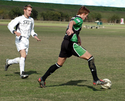

|
Misato, Sun 12th Nov. On Sunday morning two and half hours travel to Misato, a match against a physical Sala squad at an away pitch with violent gusts of wind was a dangerous combination for Hibs to solve. The above conditions considered, and playing without their usual intensity, Hibs somehow scraped a tie in their worst game of the season.
First half with the wind in our backs, Hibs seemed to start with usual confort of pace and posession, often creating good chances. The fisrt goal came in from a cross after a good combination and buildup from left side which saw Steve finishing with quality. There were of several chances which we did not convert, which turned out to be costly.
The second half was an exact opposite of the first half. With wind in our faces we struggled. Oppoturnistic Sala in our moment of panic brought more men forward, one stretch of play had Sala oracle man Lenny put in a tricky winding cross to the far post with his left foot to Dhugal, who beat Yasu & Hitoshi with header just inside of the goal post. Sala also had two more decisive chances both from 3 yards out but failed to convert in the hard conditions. In last play with the referee looking at his watch, Hibs finally went in deeper into Sala territory. Nice build up play lead by Naoki, Keita and Steve put Yohei inside box with room for shot from a 45 degree angle. The shot went a few balls wide of far post with Sid watching gratefully, no get-out-of-jail card rewarded to Hibs this afternoon.
Considering how Hibs went about this match we were extremely lucky to get out of this nightmare with a point.
From a veiw from back, Sala deserved to walk away with all three points. As the midway to the season schedule nears, it may have been a good wake-up call that there are absolutely no easy matches in the TML.
Report by Hitoshi Ono
|